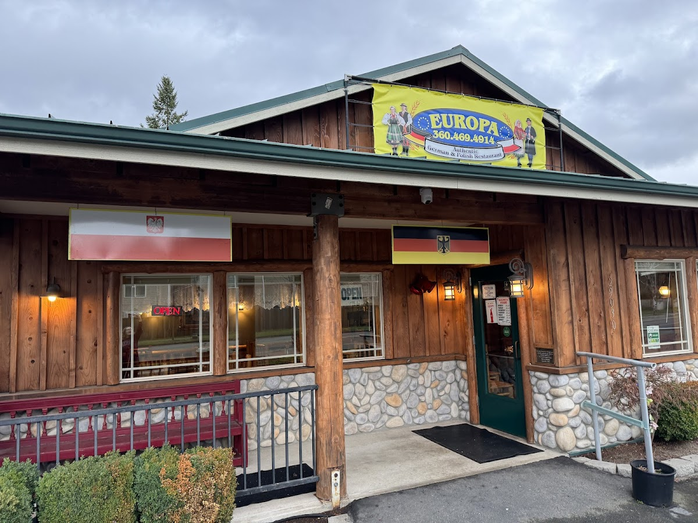

From the kitchen
Follow the flags.
Find your table.
German and Polish favorites, just off the road near Lake Sawyer.
Look for the wooden porch and the blue-and-yellow Europa sign. Inside, timber beams and a warm dining room set the scene for a comforting meal.